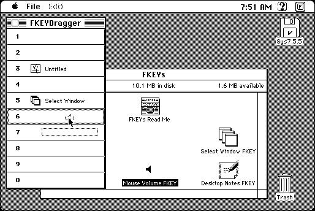

Download
fkey-dragger-10.zip (82K) FKeyDragger 1.0 repackaged into a zipped hfs disk image and checksum file. The disk image can be mounted with Mini vMac.
fkey-dragger-10.hqx (119K) FKeyDragger 1.0 in the original format.
copyright: Bruno Di Gleria
mod date: Mar 7, 1997
license: PostcardWare
last known url
(gone)
A “FKEY management utility. It allows you to easily install/copy/rename/remove/get info about an FKEY using drag & drop facilities. Five usefull FKEYs are included”. “requires at least System 7.5”.

If you find these downloads useful, please consider helping the Gryphel Project, which hosts them.
Here are the md5 checksums for the downloads, signed with Gryphel Key 5:
--------- GRY SIGNED TEXT --------- 11ed301733b1f60bc699746dfd7cac6a fkey-dragger-10.zip ceb96c2144a8e72b56ee879b4e6ec896 fkey-dragger-10.hqx ------- BEGIN GRY SIGNATURE ------- Gry/4Xa8CFcUzxdN/A2VB+rW/3xLQX8NKf4myX/jwEkhUZP/hdf8NXzKpeeZqoSE P+fkDSWtdzYFXh4kJ4PVz0utAuosPmNKwGhVcYiGIXRalcldAPABUWE/nLakMZEq IQknwdz+2U67k3ZslbRhnOc0sqoA6EDMuEPN3wMbA+o2m/Kp2vj2N0L5b6aHVpEJ -------- END GRY SIGNATURE --------